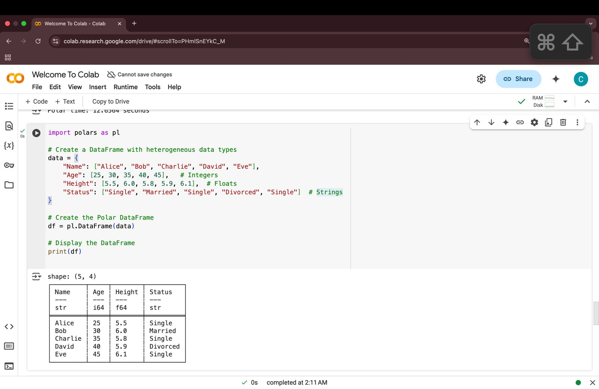
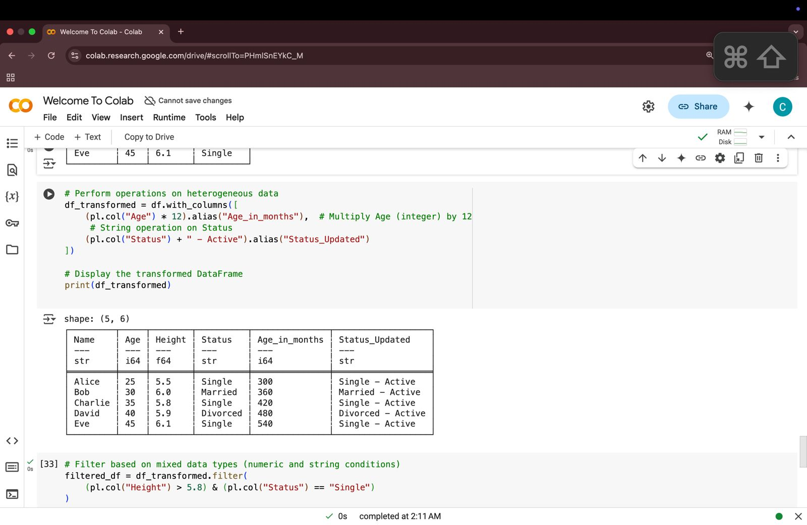
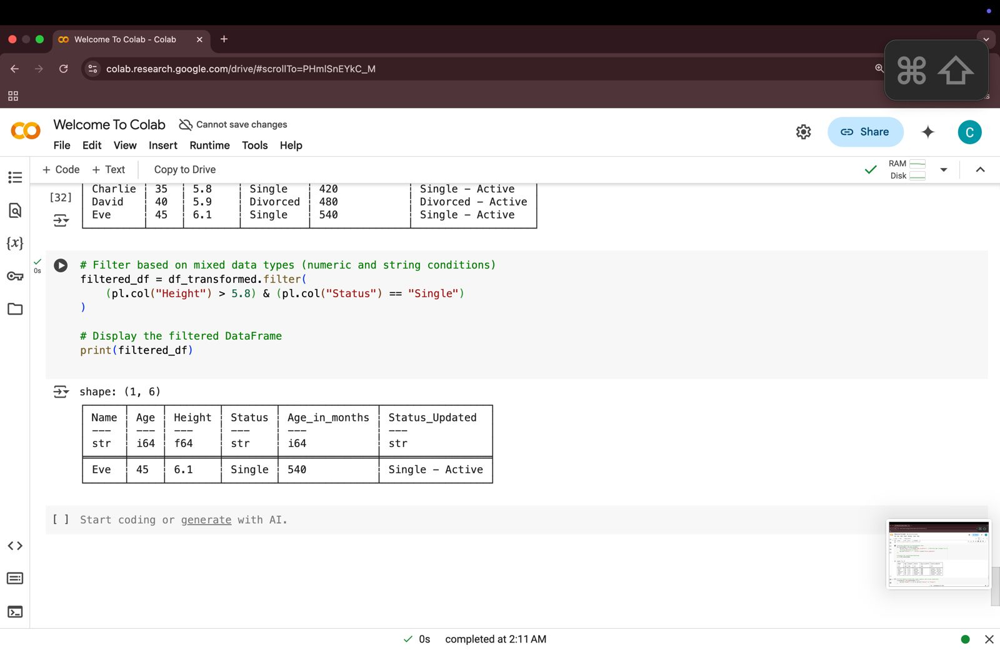
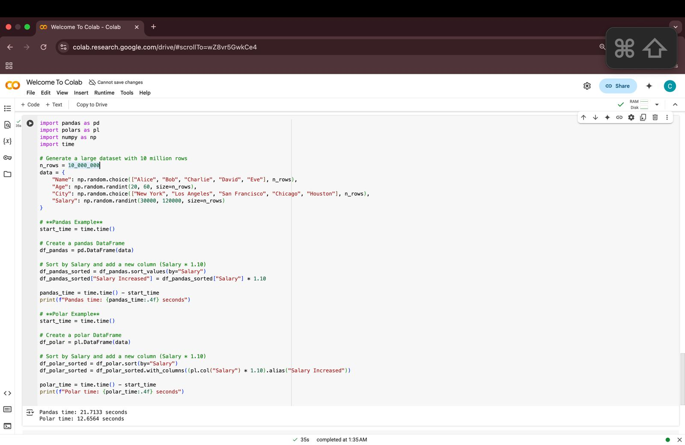

Polars is a powerful DataFrame library designed for high-speed data manipulation and analysis. It is built on the Rust programming language, providing a highly efficient alternative to traditional tools like Pandas. Due to its multi-threading capabilities and lazy evaluation, Polars significantly improves performance when handling large datasets.
Why choose Polars?
To install the Polars library in a Python environment, run:
pip install polarsTo include dependencies for handling multiple data formats, install:
pip install polars[all]For Rust users, add Polars as a dependency in the Cargo.toml file:
[dependencies]
polars = "0.38.0"Polars is designed for speed, using Rust’s memory safety and concurrency features to outperform traditional libraries. Its efficient data structures and parallel execution model allow it to process massive datasets much faster than Pandas, making it ideal for real-time analytics, financial modeling, and machine learning workflows.
Instead of executing operations immediately, Polars builds a query plan and executes it only when needed. This lazy evaluation reduces unnecessary computations, optimizes query execution, and speeds up workflows, especially when working with large datasets, making it significantly more efficient than eager execution-based libraries like Pandas.
Polars leverages Rust’s multi-threading capabilities, allowing computations to run in parallel across multiple CPU cores. This ensures that even complex operations, such as aggregations and joins, are executed efficiently. Unlike Pandas, which runs on a single thread, Polars automatically optimizes resource usage for faster data processing.
Polars is optimized for handling large datasets without excessive memory usage. Its columnar data storage format ensures that only the necessary columns are loaded into memory, reducing overall footprint. This makes Polars a great choice for cloud-based applications and environments where memory is a constraint.
Unlike many other DataFrame libraries, Polars efficiently manages heterogeneous columns, allowing different data types within the same DataFrame. It seamlessly supports operations on mixed-type data without performance degradation, making it particularly useful for handling real-world datasets that contain numeric, string, and categorical data together.
Polars natively supports various data formats, including CSV, JSON, Parquet, and Arrow. This makes it highly versatile for data ingestion, whether from local storage, cloud services, or big data pipelines. With built-in read and write functionalities, it seamlessly integrates with modern data engineering workflows.
With an intuitive API similar to SQL, Polars makes data manipulation easy for those familiar with database queries. Users can filter, group, join, and aggregate data efficiently using simple syntax, eliminating the need for complex procedural coding when handling large datasets.
import polars as pl
df = pl.DataFrame({
"Name": ["Kirmada", "Vinni", "HamBurger"],
"Job": ["CEO","Slave","Edible"]
"Salary": [100000000,5000, 20]
})
print(df)filtered_df = df.filter(pl.col("Age") > 28)
print(filtered_df)df.groupby("Age").agg(pl.col("Salary").sum())df = pl.read_csv("data.csv")
df.write_parquet("output.parquet")This example explores stress levels among students based on study hours and exams. We categorize stress into Low, Moderate, and High levels and analyze the impact of study time.
import polars as pl
# Load student stress dataset
df = pl.read_csv("student_stress.csv")
# Categorize stress levels
df = df.with_columns(
pl.when(pl.col("Stress Score") < 4).then("Low")
.when(pl.col("Stress Score") < 7).then("Moderate")
.otherwise("High")
.alias("Stress Level")
)
# Compute average stress score per study hour
avg_stress = df.groupby("Study Hours").agg(pl.col("Stress Score").mean())
# Display results
print(df)
print(avg_stress)Here, we analyze how stress levels impact suicide rates across different age groups. We use statistical correlation to find patterns in mental health data.
import polars as pl
# Load dataset containing suicide rates and stress levels
df = pl.read_csv("suicide_stress_data.csv")
# Convert age groups to categorical data
df = df.with_columns(pl.col("Age Group").cast(pl.Categorical))
# Calculate average suicide rate per stress level
suicide_trend = df.groupby("Stress Level").agg(pl.col("Suicide Rate").mean())
# Compute correlation between stress and suicide rates
correlation = df.select(pl.corr("Stress Score", "Suicide Rate"))
# Display results
print(suicide_trend)
print(correlation)The code initializes a Polars DataFrame using a dictionary with different data types, including integers, floats, and strings. It then converts this dictionary into a Polars DataFrame and displays it.
Two new columns are added: Age_in_months: Converts the age values from years to months by multiplying by 12. Status_Updated: Modifies the "Status" column by appending " - Active" to each value.
The code filters rows where: The "Height" column is greater than 5.8. The "Status" column is "Single". This results in a smaller DataFrame containing only rows that meet both conditions.
A dataset with 10 million rows is generated using NumPy and tested with both Pandas and Polars. The dataset contains names, ages, cities, and salaries. Each library sorts the dataset based on the "Salary" column and calculates a 10% salary increase.
Pandas Execution Time: ~21.71 seconds. Polars Execution Time: ~12.65 seconds. Conclusion: Polars performs significantly faster than Pandas, making it more efficient for large datasets.
Polars is widely used in various domains:
Polars is used to process vast amounts of data efficiently. It is ideal for applications such as customer segmentation, real-time event monitoring, and fraud detection.
Financial analysts and hedge funds use Polars for time-series analysis, portfolio optimization, and stock market predictions, benefiting from its low latency and fast computations.
Polars accelerates machine learning workflows by enabling rapid feature engineering, missing value imputation, and normalization, making it a valuable tool for data scientists.
Polars efficiently processes large volumes of scraped data from websites, allowing quick filtering, transformation, and storage for further analysis.
Researchers working with massive datasets in fields like genomics, climate science, and epidemiology use Polars to perform high-speed statistical analysis.
| Feature | Pandas | Polars |
|---|---|---|
| Language | Python (C-based) | Rust (Python API) |
| Execution Model | Row-wise, immediate execution | Columnar, lazy execution |
| Performance | Single-threaded | Multi-threaded (faster) |
| Memory Usage | Higher | Lower |
Polars is a game changer when it comes to data manipulation. Its performance, efficiency, and capacity to work with huge datasets make it a priceless asset for data scientists, analysts, and engineers. While Pandas can get bogged down with big data, Polars is still lightning-fast because of its multi threading and lazy execution. In my opinion, its ease of use and performance make it a tool that everyone who works with data should know. It's like a breath of fresh air new, streamlined, and designed for the data demands of today. If you want to accelerate your workflows, Polars is worth checking out.
Polars is designed for high-performance data processing, leveraging multi-threading and lazy execution to optimize computations. It is significantly faster than Pandas, especially for large datasets, and has lower memory usage.
Yes! Polars efficiently manages heterogeneous columns, allowing mixed data types in a single DataFrame while maintaining high-speed operations. This makes it ideal for real-world datasets with diverse data formats.
Absolutely! Polars excels in real-time analytics due to its fast execution model. It is particularly useful for streaming applications, financial modeling, and sensor data analysis.
Polars supports multiple file formats, including CSV, JSON, Parquet, and IPC/Feather. Its file handling is optimized for both small and large-scale datasets.
Polars has a straightforward syntax, similar to Pandas, making it easy for beginners to learn. However, it also offers advanced features like lazy execution and SQL-like queries, making it suitable for professionals handling large datasets.